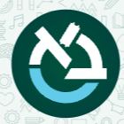

AI INITIATIVES
AI for Research
Faculty Master Class • Prof. Yaniv Fox
אוניברסיטת בר-אילן
Bar-Ilan University

Date:
April 16, 2026
Duration:
2.5 hours
Goal:
From research idea to proposal draft
Watch: Workshop Overview
Workshop Resources
📝
Context Brief
Interactive form. Translate your research expertise into structured context the AI can work with. Fill it out, copy the output, paste into your AI tool.
Interactive Form
📘
Workshop Guide
All prompts for every phase, color-coded and annotated. Each prompt explains why it works and what each part does.
Prompts + Annotations
🔍
Verification Checklist
Five-gate authentication flow for AI-suggested bibliography. How to confirm a citation is real before you use it.
Reference
📋
ISF Proposal Structure
One-page reference: every section of an ISF proposal, what goes where, page limits, and what reviewers look for.
Reference
🧪
Demo: Filled Example
See what a completed context brief looks like, pre-filled with a sample immunology project. Shows the output you'll generate.
Demo
Workshop Flow
Context Brief + Project Setup
25 min
Bibliography Discovery + Verification
35 min
Break
10 min
Synthesis
30 min
Proposal Generation
30 min